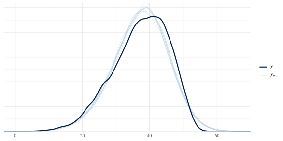
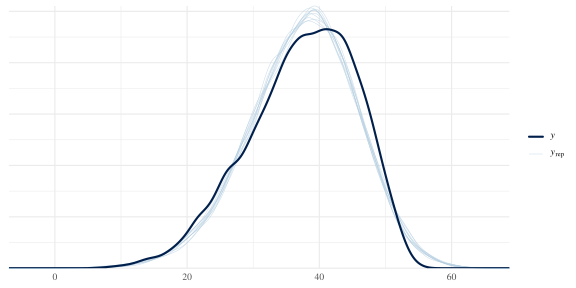
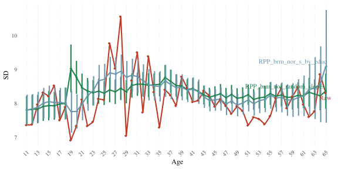
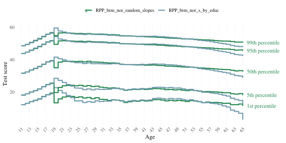
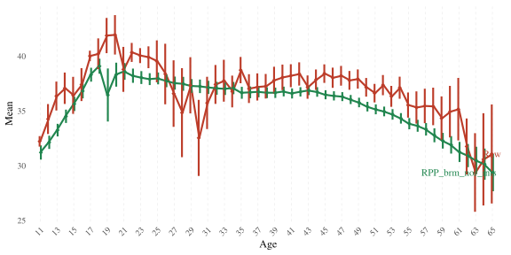
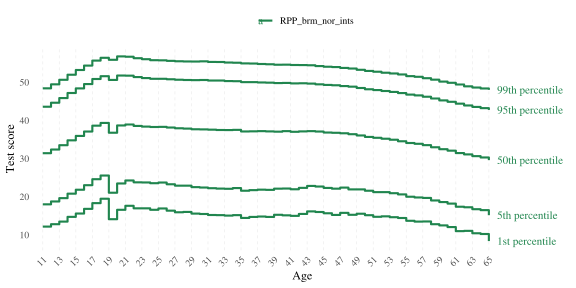
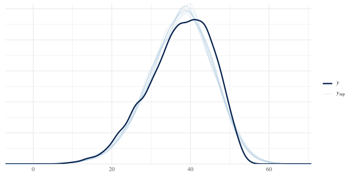
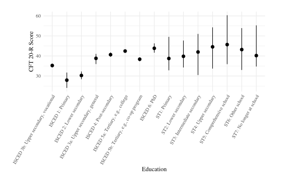

Model selection
2025-11-16
The purpose of this document is to present an abridged version of our model selection process.
knitr::opts_chunk$set(
message = FALSE,
warning = TRUE,
include = TRUE,
error = TRUE,
fig.width = 8,
fig.height = 4
)
library(tidyverse)
library(haven)
library(ggrepel)
library(brms)
library(tidybayes)
library(marginaleffects)
library(bayesplot)
library(rstan)
# depending on the platform on which you want to run the brm you might need this or not. We ran the models on a Linux-operated server, cmdstanr version 0.5.3
options(mc.cores = 4,
brms.backend = "cmdstanr",
scipen = 999,
digits = 4,
width = 140)
# windowsFonts(Times = windowsFont("Times New Roman"))
theme_set(theme_minimal(base_size = 12, base_family = "Times"))
# get data
load("data/preprocessed/de_census/census.Rda")
load("../unshareable_data/preprocessed/tl.Rda")
# get function that calculates norms and plots them
source("age_norm_comparisons.R")1 Model comparisons
1.1 Normal likelihood
1.1.1 No interactions
We start with a main effect only model with age as a spline for regularised continuous modelling, and sex as a fixed instead of random effect because of the small number of categories (2).
brm_nor <-
brm(bf(
cft ~ (1 | mig) + (1 | educ) + male + s(age),
sigma ~ (1 | mig) + (1 | educ) + male + s(age)
),
family = gaussian(),
chains = 4,
seed = 810,
file = "../unshareable_data/brms/cft/brm_nor",
data = tl) %>%
add_criterion("loo")
brm_nor## Warning: There were 5 divergent transitions after warmup. Increasing adapt_delta above 0.8 may help. See
## http://mc-stan.org/misc/warnings.html#divergent-transitions-after-warmup## Family: gaussian
## Links: mu = identity; sigma = log
## Formula: cft ~ (1 | mig) + (1 | educ) + male + s(age)
## sigma ~ (1 | mig) + (1 | educ) + male + s(age)
## Data: tl (Number of observations: 9980)
## Draws: 4 chains, each with iter = 2000; warmup = 1000; thin = 1;
## total post-warmup draws = 4000
##
## Smoothing Spline Hyperparameters:
## Estimate Est.Error l-95% CI u-95% CI Rhat Bulk_ESS Tail_ESS
## sds(sage_1) 21.10 5.45 12.88 34.08 1.00 1453 1891
## sds(sigma_sage_1) 0.13 0.14 0.00 0.50 1.00 1327 1977
##
## Multilevel Hyperparameters:
## ~educ (Number of levels: 15)
## Estimate Est.Error l-95% CI u-95% CI Rhat Bulk_ESS Tail_ESS
## sd(Intercept) 4.61 1.00 3.15 7.02 1.00 1264 1915
## sd(sigma_Intercept) 0.10 0.03 0.06 0.17 1.00 1570 2496
##
## ~mig (Number of levels: 6)
## Estimate Est.Error l-95% CI u-95% CI Rhat Bulk_ESS Tail_ESS
## sd(Intercept) 3.02 1.30 1.53 6.52 1.00 1489 2507
## sd(sigma_Intercept) 0.11 0.06 0.05 0.25 1.00 1531 2143
##
## Regression Coefficients:
## Estimate Est.Error l-95% CI u-95% CI Rhat Bulk_ESS Tail_ESS
## Intercept 33.83 1.77 30.43 37.45 1.00 1130 1606
## sigma_Intercept 1.99 0.06 1.87 2.10 1.00 1769 2020
## maleTRUE 1.47 0.13 1.21 1.73 1.00 7599 2963
## sigma_maleTRUE 0.01 0.01 -0.02 0.04 1.00 8263 2851
## sage_1 37.63 12.20 12.83 61.66 1.00 3654 3295
## sigma_sage_1 -0.02 0.31 -0.60 0.71 1.00 3208 2013
##
## Draws were sampled using sample(hmc). For each parameter, Bulk_ESS
## and Tail_ESS are effective sample size measures, and Rhat is the potential
## scale reduction factor on split chains (at convergence, Rhat = 1).pp_check(brm_nor)bayes_R2(brm_nor)## Estimate Est.Error Q2.5 Q97.5
## R2 0.3101 0.006784 0.2963 0.3233Doesn’t look too bad but we can do better, e.g., by fitting a spline for each education category (in line with an interaction between age and educational attainment).
1.1.2 Spline by educ for the mean
Now we fit a spline for each education category separately to allow for different development trajectories.
1.1.2.1 educ as random main effect
brm_nor_s_by_educ_main_random_educ <-
brm(bf(
cft ~ (1 | mig) + male + (1 | educ) + s(age, by = educ),
sigma ~ (1 | mig) + (1 | educ) + male + s(age)
),
family = gaussian(),
chains = 4,
seed = 810,
file = "../unshareable_data/brms/cft/brm_nor_s_by_educ_main_random_educ",
data = tl) %>%
add_criterion("loo")
brm_nor_s_by_educ_main_random_educ## Warning: There were 179 divergent transitions after warmup. Increasing adapt_delta above 0.8 may help. See
## http://mc-stan.org/misc/warnings.html#divergent-transitions-after-warmup## Family: gaussian
## Links: mu = identity; sigma = log
## Formula: cft ~ (1 | mig) + male + (1 | educ) + s(age, by = educ)
## sigma ~ (1 | mig) + (1 | educ) + male + s(age)
## Data: tl (Number of observations: 9980)
## Draws: 4 chains, each with iter = 2000; warmup = 1000; thin = 1;
## total post-warmup draws = 4000
##
## Smoothing Spline Hyperparameters:
## Estimate Est.Error l-95% CI u-95% CI Rhat Bulk_ESS Tail_ESS
## sds(sageeducISCED3b:Uppersecondaryvocational_1) 8.62 3.86 3.43 18.51 1.00 2319 2561
## sds(sageeducISCED1:Primary_1) 9.07 6.81 0.47 26.05 1.00 1962 1767
## sds(sageeducISCED2:Lowersecondary_1) 7.90 6.10 0.36 23.12 1.00 1286 1664
## sds(sageeducISCED3a:Uppersecondarygeneral_1) 10.35 7.38 0.84 28.13 1.00 1459 1805
## sds(sageeducISCED4:PostMsecondary_1) 7.69 4.15 1.97 17.75 1.00 1774 1555
## sds(sageeducISCED5a:Tertiarye.g.college_1) 7.85 4.36 2.43 19.34 1.00 1795 2296
## sds(sageeducISCED5b:Tertiarye.g.coMopprogram_1) 8.30 3.80 3.28 17.48 1.00 2772 2572
## sds(sageeducISCED6:PhD_1) 6.89 5.73 0.25 21.69 1.00 1789 2110
## sds(sageeducST1:Primary_1) 10.11 11.63 0.26 40.41 1.00 3987 2034
## sds(sageeducST2:Lowersecondary_1) 8.60 8.59 0.23 31.09 1.00 2992 2247
## sds(sageeducST3:Intermediatesecondary_1) 11.17 11.08 0.32 40.94 1.00 1973 1947
## sds(sageeducST4:Uppersecondary_1) 12.15 9.48 0.49 36.08 1.00 1755 2058
## sds(sageeducST5:Comprehensiveschool_1) 10.54 10.46 0.36 37.81 1.00 1922 2176
## sds(sageeducST6:Otherschool_1) 9.82 9.54 0.36 34.09 1.00 2321 2416
## sds(sageeducST7:Nolongeratschool_1) 11.00 11.30 0.30 40.99 1.00 4474 2545
## sds(sigma_sage_1) 0.14 0.14 0.01 0.52 1.00 1185 2051
##
## Multilevel Hyperparameters:
## ~educ (Number of levels: 15)
## Estimate Est.Error l-95% CI u-95% CI Rhat Bulk_ESS Tail_ESS
## sd(Intercept) 11.70 2.98 6.84 18.43 1.00 1404 1629
## sd(sigma_Intercept) 0.10 0.03 0.06 0.16 1.00 1320 2025
##
## ~mig (Number of levels: 6)
## Estimate Est.Error l-95% CI u-95% CI Rhat Bulk_ESS Tail_ESS
## sd(Intercept) 2.91 1.23 1.46 6.03 1.00 1589 2356
## sd(sigma_Intercept) 0.10 0.06 0.05 0.25 1.00 1562 1874
##
## Regression Coefficients:
## Estimate Est.Error l-95% CI u-95% CI Rhat Bulk_ESS Tail_ESS
## Intercept 42.00 3.51 35.43 49.33 1.00 925 1622
## sigma_Intercept 1.99 0.06 1.87 2.10 1.00 1754 2117
## maleTRUE 1.47 0.13 1.22 1.73 1.00 7496 2665
## sigma_maleTRUE 0.01 0.01 -0.02 0.04 1.00 7591 2862
## sage:educISCED3b:Uppersecondaryvocational_1 -29.66 19.40 -72.07 7.39 1.00 2661 1985
## sage:educISCED1:Primary_1 1.26 29.51 -60.61 55.07 1.00 2074 1376
## sage:educISCED2:Lowersecondary_1 -28.17 24.93 -89.00 8.47 1.00 2545 2214
## sage:educISCED3a:Uppersecondarygeneral_1 -17.31 26.85 -79.26 33.63 1.00 3211 2167
## sage:educISCED4:PostMsecondary_1 -19.39 22.56 -70.41 20.10 1.00 2360 1993
## sage:educISCED5a:Tertiarye.g.college_1 -24.40 18.04 -64.50 11.12 1.00 2890 2301
## sage:educISCED5b:Tertiarye.g.coMopprogram_1 -19.46 20.47 -62.29 20.86 1.00 2937 2443
## sage:educISCED6:PhD_1 -21.60 25.79 -72.19 37.26 1.00 2352 1487
## sage:educST1:Primary_1 76.15 64.62 -41.26 211.47 1.00 2656 1788
## sage:educST2:Lowersecondary_1 101.31 44.04 12.02 184.53 1.00 2557 1623
## sage:educST3:Intermediatesecondary_1 101.35 50.24 -13.94 187.11 1.00 1611 1552
## sage:educST4:Uppersecondary_1 90.11 45.04 -24.50 164.27 1.00 1639 1341
## sage:educST5:Comprehensiveschool_1 114.52 44.26 7.68 187.57 1.00 1568 1469
## sage:educST6:Otherschool_1 108.78 44.62 2.18 177.57 1.00 2404 1905
## sage:educST7:Nolongeratschool_1 106.85 67.22 -21.32 247.24 1.00 2666 2310
## sigma_sage_1 0.02 0.33 -0.63 0.76 1.00 2577 1801
##
## Draws were sampled using sample(hmc). For each parameter, Bulk_ESS
## and Tail_ESS are effective sample size measures, and Rhat is the potential
## scale reduction factor on split chains (at convergence, Rhat = 1).pp_check(brm_nor_s_by_educ_main_random_educ)
loo_compare(brm_nor, brm_nor_s_by_educ_main_random_educ)## elpd_diff se_diff
## brm_nor_s_by_educ_main_random_educ 0.0 0.0
## brm_nor -0.3 7.0179 divergent transitions and negligible gain in fit compared to the simpler model.
1.1.2.2 educ as fixed main effect
brm_nor_age_by_educ_main_fixed_educ <-
brm(bf(
cft ~ (1 | mig) + male + educ + s(age, by = educ),
sigma ~ (1 | mig) + (1 | educ) + male + s(age)
),
family = gaussian(),
chains = 4,
seed = 810,
file = "../unshareable_data/brms/cft/brm_nor_s_by_educ_main_fixed_educ",
data = tl) %>%
add_criterion("loo")
brm_nor_age_by_educ_main_fixed_educ## Warning: There were 138 divergent transitions after warmup. Increasing adapt_delta above 0.8 may help. See
## http://mc-stan.org/misc/warnings.html#divergent-transitions-after-warmup## Family: gaussian
## Links: mu = identity; sigma = log
## Formula: cft ~ (1 | mig) + male + educ + s(age, by = educ)
## sigma ~ (1 | mig) + (1 | educ) + male + s(age)
## Data: tl (Number of observations: 9980)
## Draws: 4 chains, each with iter = 2000; warmup = 1000; thin = 1;
## total post-warmup draws = 4000
##
## Smoothing Spline Hyperparameters:
## Estimate Est.Error l-95% CI u-95% CI Rhat Bulk_ESS Tail_ESS
## sds(sageeducISCED3b:Uppersecondaryvocational_1) 8.48 3.88 3.39 18.19 1.00 2211 2733
## sds(sageeducISCED1:Primary_1) 9.20 6.50 0.58 25.17 1.00 1812 1532
## sds(sageeducISCED2:Lowersecondary_1) 7.85 5.69 0.38 21.66 1.00 1406 1749
## sds(sageeducISCED3a:Uppersecondarygeneral_1) 10.59 7.53 0.88 29.87 1.00 1453 1663
## sds(sageeducISCED4:PostMsecondary_1) 7.79 4.51 1.95 19.09 1.00 2016 2270
## sds(sageeducISCED5a:Tertiarye.g.college_1) 7.80 4.29 2.42 19.02 1.00 1891 2422
## sds(sageeducISCED5b:Tertiarye.g.coMopprogram_1) 8.58 4.15 3.41 20.25 1.00 1934 837
## sds(sageeducISCED6:PhD_1) 6.77 5.70 0.23 21.67 1.00 2158 2040
## sds(sageeducST1:Primary_1) 9.96 11.49 0.28 41.44 1.00 4186 1549
## sds(sageeducST2:Lowersecondary_1) 9.65 10.13 0.33 35.27 1.00 2406 2328
## sds(sageeducST3:Intermediatesecondary_1) 10.88 11.95 0.32 45.53 1.00 1669 1053
## sds(sageeducST4:Uppersecondary_1) 10.94 10.59 0.33 41.61 1.00 824 470
## sds(sageeducST5:Comprehensiveschool_1) 10.48 10.95 0.36 41.49 1.00 1780 1262
## sds(sageeducST6:Otherschool_1) 9.49 10.28 0.33 37.16 1.00 1509 1050
## sds(sageeducST7:Nolongeratschool_1) 9.73 10.67 0.32 36.62 1.00 2963 2146
## sds(sigma_sage_1) 0.14 0.14 0.01 0.52 1.00 1432 1809
##
## Multilevel Hyperparameters:
## ~mig (Number of levels: 6)
## Estimate Est.Error l-95% CI u-95% CI Rhat Bulk_ESS Tail_ESS
## sd(Intercept) 2.97 1.33 1.44 6.34 1.00 1175 2007
## sd(sigma_Intercept) 0.10 0.05 0.04 0.24 1.00 1264 1943
##
## ~educ (Number of levels: 15)
## Estimate Est.Error l-95% CI u-95% CI Rhat Bulk_ESS Tail_ESS
## sd(sigma_Intercept) 0.10 0.02 0.06 0.16 1.00 1438 2238
##
## Regression Coefficients:
## Estimate Est.Error l-95% CI u-95% CI Rhat Bulk_ESS Tail_ESS
## Intercept 32.98 1.36 30.20 35.59 1.00 1464 2303
## sigma_Intercept 1.99 0.05 1.87 2.09 1.00 1498 1863
## maleTRUE 1.48 0.14 1.21 1.74 1.00 5047 2541
## educISCED1:Primary -9.17 1.60 -12.58 -6.21 1.00 2248 2633
## educISCED2:Lowersecondary -2.96 0.92 -4.59 -0.95 1.00 1484 1794
## educISCED3a:Uppersecondarygeneral 5.23 0.85 3.49 6.85 1.00 1562 1631
## educISCED4:PostMsecondary 4.39 0.85 2.66 6.06 1.00 1491 1975
## educISCED5a:Tertiarye.g.college 6.41 0.86 4.62 8.05 1.00 1515 1648
## educISCED5b:Tertiarye.g.coMopprogram 2.12 0.93 0.16 3.93 1.00 1572 758
## educISCED6:PhD 9.96 2.23 5.08 14.30 1.00 1911 2139
## educST1:Primary 92.06 50.25 -8.73 190.30 1.00 3094 2670
## educST2:Lowersecondary 19.67 11.59 -3.13 42.65 1.00 2274 1841
## educST3:Intermediatesecondary 21.92 12.02 -6.34 41.29 1.00 1196 715
## educST4:Uppersecondary 24.52 10.14 -1.16 38.77 1.00 802 407
## educST5:Comprehensiveschool 29.46 10.64 12.41 54.30 1.00 1130 748
## educST6:Otherschool 25.67 10.19 7.14 46.27 1.00 1269 695
## educST7:Nolongeratschool 41.56 18.16 6.45 75.78 1.00 2665 1871
## sigma_maleTRUE 0.01 0.01 -0.02 0.04 1.00 9021 2646
## sage:educISCED3b:Uppersecondaryvocational_1 -28.59 20.01 -71.83 8.24 1.00 1565 1721
## sage:educISCED1:Primary_1 3.97 27.88 -57.57 62.46 1.00 2399 1924
## sage:educISCED2:Lowersecondary_1 -27.48 24.58 -88.46 10.01 1.00 1631 1761
## sage:educISCED3a:Uppersecondarygeneral_1 -18.20 30.26 -85.05 35.13 1.00 1461 616
## sage:educISCED4:PostMsecondary_1 -18.50 21.92 -67.02 23.07 1.00 1678 1728
## sage:educISCED5a:Tertiarye.g.college_1 -23.71 18.52 -63.00 14.59 1.00 1823 1765
## sage:educISCED5b:Tertiarye.g.coMopprogram_1 -18.50 19.87 -61.59 19.64 1.00 2517 2051
## sage:educISCED6:PhD_1 -24.20 24.95 -78.61 27.54 1.00 1782 1842
## sage:educST1:Primary_1 390.20 206.21 -24.62 796.79 1.00 2920 2624
## sage:educST2:Lowersecondary_1 119.77 59.80 2.69 235.31 1.00 1844 1324
## sage:educST3:Intermediatesecondary_1 114.85 58.09 -22.71 218.55 1.00 1341 865
## sage:educST4:Uppersecondary_1 105.39 50.86 -11.60 194.08 1.00 903 528
## sage:educST5:Comprehensiveschool_1 138.25 51.54 32.46 250.23 1.00 1170 628
## sage:educST6:Otherschool_1 132.33 53.80 37.55 244.79 1.00 1241 738
## sage:educST7:Nolongeratschool_1 220.19 99.53 31.89 408.55 1.00 2716 2222
## sigma_sage_1 0.02 0.31 -0.53 0.72 1.00 2213 1616
##
## Draws were sampled using sample(hmc). For each parameter, Bulk_ESS
## and Tail_ESS are effective sample size measures, and Rhat is the potential
## scale reduction factor on split chains (at convergence, Rhat = 1).pp_check(brm_nor_age_by_educ_main_fixed_educ)
138 divergent transitions when educ is a fixed effect instead of random.
1.1.2.3 No educ main effect
brm_nor_s_by_educ <-
brm(bf(
cft ~ (1 | mig) + male + s(age, by = educ),
sigma ~ (1 | mig) + (1 | educ) + male + s(age)),
family = gaussian(),
chains = 4,
seed = 810,
file = "../unshareable_data/brms/cft/brm_nor_s_by_educ",
data = tl) %>%
add_criterion("loo")
brm_nor_s_by_educ## Warning: There were 82 divergent transitions after warmup. Increasing adapt_delta above 0.8 may help. See
## http://mc-stan.org/misc/warnings.html#divergent-transitions-after-warmup## Family: gaussian
## Links: mu = identity; sigma = log
## Formula: cft ~ (1 | mig) + male + s(age, by = educ)
## sigma ~ (1 | mig) + (1 | educ) + male + s(age)
## Data: tl (Number of observations: 9980)
## Draws: 4 chains, each with iter = 2000; warmup = 1000; thin = 1;
## total post-warmup draws = 4000
##
## Smoothing Spline Hyperparameters:
## Estimate Est.Error l-95% CI u-95% CI Rhat Bulk_ESS Tail_ESS
## sds(sageeducISCED3b:Uppersecondaryvocational_1) 26.90 8.90 13.62 48.74 1.00 1297 1796
## sds(sageeducISCED1:Primary_1) 94.05 31.07 50.62 168.77 1.00 1866 2534
## sds(sageeducISCED2:Lowersecondary_1) 69.95 25.18 34.59 130.80 1.00 1090 1782
## sds(sageeducISCED3a:Uppersecondarygeneral_1) 17.53 9.63 2.71 40.15 1.00 994 976
## sds(sageeducISCED4:PostMsecondary_1) 8.41 4.58 2.32 19.88 1.00 1593 2191
## sds(sageeducISCED5a:Tertiarye.g.college_1) 19.34 6.83 9.32 35.95 1.00 894 2030
## sds(sageeducISCED5b:Tertiarye.g.coMopprogram_1) 12.61 5.68 4.62 26.72 1.00 1394 1637
## sds(sageeducISCED6:PhD_1) 14.68 6.66 6.49 31.59 1.00 3044 3018
## sds(sageeducST1:Primary_1) 10.33 10.92 0.33 41.00 1.00 2968 2290
## sds(sageeducST2:Lowersecondary_1) 12.21 10.70 0.55 40.43 1.00 2318 1975
## sds(sageeducST3:Intermediatesecondary_1) 23.84 13.99 9.00 61.59 1.00 2964 2036
## sds(sageeducST4:Uppersecondary_1) 26.36 10.47 13.01 53.66 1.00 3673 2790
## sds(sageeducST5:Comprehensiveschool_1) 28.53 15.06 11.95 69.68 1.00 2616 2394
## sds(sageeducST6:Otherschool_1) 23.95 13.04 9.92 57.46 1.00 3226 2293
## sds(sageeducST7:Nolongeratschool_1) 14.41 14.42 0.42 51.47 1.00 2596 2260
## sds(sigma_sage_1) 0.13 0.13 0.00 0.49 1.00 1421 2258
##
## Multilevel Hyperparameters:
## ~mig (Number of levels: 6)
## Estimate Est.Error l-95% CI u-95% CI Rhat Bulk_ESS Tail_ESS
## sd(Intercept) 2.94 1.25 1.46 6.10 1.00 1777 2386
## sd(sigma_Intercept) 0.10 0.06 0.04 0.24 1.00 1601 1968
##
## ~educ (Number of levels: 15)
## Estimate Est.Error l-95% CI u-95% CI Rhat Bulk_ESS Tail_ESS
## sd(sigma_Intercept) 0.10 0.02 0.06 0.15 1.00 1584 2360
##
## Regression Coefficients:
## Estimate Est.Error l-95% CI u-95% CI Rhat Bulk_ESS Tail_ESS
## Intercept 36.92 1.40 34.03 39.67 1.00 1225 1642
## sigma_Intercept 1.98 0.06 1.87 2.09 1.00 1452 1956
## maleTRUE 1.46 0.14 1.19 1.74 1.00 8270 2851
## sigma_maleTRUE 0.01 0.01 -0.02 0.04 1.00 8309 2785
## sage:educISCED3b:Uppersecondaryvocational_1 -149.78 40.41 -235.21 -76.50 1.00 1272 1674
## sage:educISCED1:Primary_1 -392.34 121.74 -657.88 -163.76 1.00 2422 2357
## sage:educISCED2:Lowersecondary_1 -378.04 101.15 -593.27 -199.59 1.00 1150 1684
## sage:educISCED3a:Uppersecondarygeneral_1 11.55 36.93 -52.84 94.30 1.00 1696 1912
## sage:educISCED4:PostMsecondary_1 -8.54 21.52 -50.08 38.67 1.00 1464 1420
## sage:educISCED5a:Tertiarye.g.college_1 31.94 29.85 -19.59 97.61 1.00 1416 1855
## sage:educISCED5b:Tertiarye.g.coMopprogram_1 -57.12 26.91 -115.28 -11.57 1.00 1260 2270
## sage:educISCED6:PhD_1 24.38 32.87 -37.01 95.90 1.00 3039 2594
## sage:educST1:Primary_1 36.44 35.48 -29.07 121.68 1.00 2031 1193
## sage:educST2:Lowersecondary_1 54.63 40.58 -22.72 145.75 1.00 2220 1673
## sage:educST3:Intermediatesecondary_1 55.76 67.54 -65.33 208.99 1.00 2469 1645
## sage:educST4:Uppersecondary_1 36.43 66.65 -99.02 177.64 1.00 2826 2139
## sage:educST5:Comprehensiveschool_1 29.48 79.32 -148.08 175.96 1.00 2136 1966
## sage:educST6:Otherschool_1 46.69 65.41 -88.88 174.08 1.00 2766 2258
## sage:educST7:Nolongeratschool_1 24.93 51.32 -60.21 154.41 1.00 2102 1419
## sigma_sage_1 -0.01 0.33 -0.61 0.76 1.00 2538 2085
##
## Draws were sampled using sample(hmc). For each parameter, Bulk_ESS
## and Tail_ESS are effective sample size measures, and Rhat is the potential
## scale reduction factor on split chains (at convergence, Rhat = 1).pp_check(brm_nor_s_by_educ)
loo_compare(brm_nor, brm_nor_s_by_educ, brm_nor_s_by_educ_main_random_educ, brm_nor_age_by_educ_main_fixed_educ)## elpd_diff se_diff
## brm_nor_age_by_educ_main_fixed_educ 0.0 0.0
## brm_nor_s_by_educ_main_random_educ -0.7 2.1
## brm_nor -1.0 7.4
## brm_nor_s_by_educ -10.3 6.3Somewhat worse prediction accuracy, but similar fit and 82 divergent transitions.
Here we don’t include a main effect for educ because it does not contribute any improvement in fit while leading to two problems: 1. more divergent transitions and 2. irregualrities in the norms, see comparison:
main_educ_vs_not <- age_norm_comparisons(
brm_nor, brm_nor_s_by_educ, brm_nor_s_by_educ_main_random_educ,
palette = c(
"#BC3C29FF",
# "#0072B5FF",
"#20854EFF",
# "#7876B1FF",
"#6F99ADFF",
# "#E18727FF",
# "#FFDC91FF",
"#EE4C97FF"
),
output_file = "data/results/educ_vs_not.rds"
)
main_educ_vs_not[-1]## $overall_estimates
## # A tibble: 4 × 5
## Mean SE_of_Mean SD SE_of_SD Model
## <dbl> <dbl> <dbl> <dbl> <chr>
## 1 37.4 NA 8.19 NA Raw
## 2 35.5 0.101 8.65 0.0838 RPP_brm_nor
## 3 35.7 0.118 8.66 0.105 RPP_brm_nor_s_by_educ
## 4 35.6 0.106 8.63 0.0899 RPP_brm_nor_s_by_educ_main_random_educ
##
## $means_plot
##
## $SDs_plot## Warning: Removed 55 rows containing missing values or values outside the scale range (`geom_segment()`).
##
## $SEs_plot
##
## $percentile_plot
So it seems the term s(age, by = educ) is required
without additionally including a main effect of educ to get sensible
estimates for ages 19-22. This is probably due to the change in meaning
of the education variable at age 19 (school type to ISCED), which causes
some difficulties for the model. Note that this issue also afflicts the
model with random slopes instead of splines.
1.1.2.4 Random slopes instead of splines?
brm_nor_random_slopes <-
brm(bf(
cft ~ (1 | mig) + male + (1 + age|educ),
sigma ~ (1 | mig) + male + (1 + age|educ)
),
family = gaussian(),
chains = 4,
seed = 810,
file = "../unshareable_data/brms/cft/brm_nor_educ_random_slope",
data = tl) %>%
add_criterion("loo")
random_slopes_vs_spline <- age_norm_comparisons(
brm_nor_random_slopes, brm_nor_s_by_educ,
palette = c(
"#BC3C29FF",
# "#0072B5FF",
"#20854EFF",
# "#7876B1FF",
"#6F99ADFF"
# "#E18727FF",
# "#FFDC91FF",
# "#EE4C97FF"
),
output_file = "data/results/random_slopes_vs_spline.rds"
)
random_slopes_vs_spline[-1]## $overall_estimates
## # A tibble: 3 × 5
## Mean SE_of_Mean SD SE_of_SD Model
## <dbl> <dbl> <dbl> <dbl> <chr>
## 1 37.4 NA 8.19 NA Raw
## 2 35.9 0.0995 8.50 0.0820 RPP_brm_nor_random_slopes
## 3 35.7 0.116 8.65 0.102 RPP_brm_nor_s_by_educ
##
## $means_plot##
## $SDs_plot## Warning: Removed 55 rows containing missing values or values outside the scale range (`geom_segment()`).
##
## $SEs_plot##
## $percentile_plot
1.1.3 More interactions
We incorporate more interactions into the mean prediction for theoretical reasons (it is e.g., reasonable to expect educational background to interact with migration background). We do not incorporate interaction terms into the sigma prediction as they would unnecessarily complicate the model for little gain in prediction accuracy.
brm_nor_ints <-
brm(bf(
cft ~ (1 | mig) + male + (1 | mig:male) + (1 | mig:educ) + (1 | male:educ) + s(age, by = educ),
sigma ~ (1 | mig) + (1 | educ) + male + s(age)
),
chains = 4,
seed = 810,
file = "../unshareable_data/brms/cft/brm_nor_ints",
data = tl) %>%
add_criterion("loo")
brm_nor_ints## Warning: There were 63 divergent transitions after warmup. Increasing adapt_delta above 0.8 may help. See
## http://mc-stan.org/misc/warnings.html#divergent-transitions-after-warmup## Family: gaussian
## Links: mu = identity; sigma = log
## Formula: cft ~ (1 | mig) + male + (1 | mig:male) + (1 | mig:educ) + (1 | male:educ) + s(age, by = educ)
## sigma ~ (1 | mig) + (1 | educ) + male + s(age)
## Data: tl (Number of observations: 9980)
## Draws: 4 chains, each with iter = 2000; warmup = 1000; thin = 1;
## total post-warmup draws = 4000
##
## Smoothing Spline Hyperparameters:
## Estimate Est.Error l-95% CI u-95% CI Rhat Bulk_ESS Tail_ESS
## sds(sageeducISCED3b:Uppersecondaryvocational_1) 8.55 4.11 3.29 18.38 1.00 2415 2610
## sds(sageeducISCED1:Primary_1) 15.86 22.83 0.36 87.39 1.01 365 334
## sds(sageeducISCED2:Lowersecondary_1) 10.85 6.81 1.32 27.72 1.00 1281 1220
## sds(sageeducISCED3a:Uppersecondarygeneral_1) 10.19 7.45 0.99 28.10 1.00 1674 1738
## sds(sageeducISCED4:PostMsecondary_1) 7.46 4.13 1.82 17.26 1.00 2045 2154
## sds(sageeducISCED5a:Tertiarye.g.college_1) 8.56 4.62 2.54 19.94 1.00 1739 2414
## sds(sageeducISCED5b:Tertiarye.g.coMopprogram_1) 8.62 3.94 3.53 18.21 1.00 2494 2749
## sds(sageeducISCED6:PhD_1) 9.67 6.93 0.57 27.10 1.00 1101 1365
## sds(sageeducST1:Primary_1) 10.78 12.33 0.31 43.48 1.00 2371 1534
## sds(sageeducST2:Lowersecondary_1) 11.66 10.30 0.40 37.11 1.00 2066 1771
## sds(sageeducST3:Intermediatesecondary_1) 22.90 14.47 5.63 59.92 1.00 1553 820
## sds(sageeducST4:Uppersecondary_1) 26.56 11.63 11.50 56.79 1.00 2378 2592
## sds(sageeducST5:Comprehensiveschool_1) 27.89 16.02 10.12 71.72 1.00 1550 1250
## sds(sageeducST6:Otherschool_1) 22.15 12.10 7.21 53.48 1.00 2126 1596
## sds(sageeducST7:Nolongeratschool_1) 14.44 14.92 0.41 55.04 1.00 2607 2303
## sds(sigma_sage_1) 0.14 0.14 0.00 0.51 1.00 1346 1893
##
## Multilevel Hyperparameters:
## ~male:educ (Number of levels: 30)
## Estimate Est.Error l-95% CI u-95% CI Rhat Bulk_ESS Tail_ESS
## sd(Intercept) 4.37 1.33 2.00 7.26 1.01 294 404
##
## ~mig (Number of levels: 6)
## Estimate Est.Error l-95% CI u-95% CI Rhat Bulk_ESS Tail_ESS
## sd(Intercept) 2.91 1.33 1.40 6.29 1.00 1362 1735
## sd(sigma_Intercept) 0.10 0.05 0.04 0.23 1.00 1345 1574
##
## ~mig:educ (Number of levels: 89)
## Estimate Est.Error l-95% CI u-95% CI Rhat Bulk_ESS Tail_ESS
## sd(Intercept) 0.75 0.22 0.35 1.22 1.00 1069 1934
##
## ~mig:male (Number of levels: 12)
## Estimate Est.Error l-95% CI u-95% CI Rhat Bulk_ESS Tail_ESS
## sd(Intercept) 0.24 0.27 0.01 0.86 1.00 2171 1890
##
## ~educ (Number of levels: 15)
## Estimate Est.Error l-95% CI u-95% CI Rhat Bulk_ESS Tail_ESS
## sd(sigma_Intercept) 0.10 0.03 0.06 0.16 1.00 1260 2365
##
## Regression Coefficients:
## Estimate Est.Error l-95% CI u-95% CI Rhat Bulk_ESS Tail_ESS
## Intercept 36.59 2.01 32.78 40.62 1.01 844 1214
## sigma_Intercept 1.98 0.06 1.87 2.09 1.00 1174 1799
## maleTRUE 0.97 1.73 -2.41 4.56 1.00 1101 1837
## sigma_maleTRUE 0.01 0.01 -0.02 0.04 1.00 8303 3327
## sage:educISCED3b:Uppersecondaryvocational_1 -30.96 19.96 -77.30 3.66 1.00 2303 2157
## sage:educISCED1:Primary_1 -51.33 101.10 -362.90 24.15 1.01 364 384
## sage:educISCED2:Lowersecondary_1 -41.33 34.09 -130.04 7.64 1.00 1724 1725
## sage:educISCED3a:Uppersecondarygeneral_1 -14.87 28.34 -73.71 35.79 1.00 1428 1834
## sage:educISCED4:PostMsecondary_1 -17.31 20.00 -60.38 22.56 1.00 1928 2014
## sage:educISCED5a:Tertiarye.g.college_1 -21.34 19.39 -60.59 19.31 1.00 2003 2027
## sage:educISCED5b:Tertiarye.g.coMopprogram_1 -21.43 20.15 -65.20 17.37 1.00 2112 2372
## sage:educISCED6:PhD_1 0.85 32.21 -50.80 78.93 1.01 1064 1925
## sage:educST1:Primary_1 31.07 42.57 -57.69 108.55 1.00 1397 1136
## sage:educST2:Lowersecondary_1 57.57 37.42 -21.38 133.16 1.00 2017 2108
## sage:educST3:Intermediatesecondary_1 55.43 67.83 -70.48 190.40 1.00 1629 1803
## sage:educST4:Uppersecondary_1 41.27 68.07 -97.58 180.59 1.00 2123 2170
## sage:educST5:Comprehensiveschool_1 31.55 91.05 -160.26 182.03 1.00 1506 948
## sage:educST6:Otherschool_1 47.56 65.50 -87.44 171.05 1.00 1450 1589
## sage:educST7:Nolongeratschool_1 24.88 54.17 -86.27 146.03 1.00 1557 1438
## sigma_sage_1 0.01 0.32 -0.59 0.80 1.00 2093 1720
##
## Draws were sampled using sample(hmc). For each parameter, Bulk_ESS
## and Tail_ESS are effective sample size measures, and Rhat is the potential
## scale reduction factor on split chains (at convergence, Rhat = 1).pp_check(brm_nor_ints)
bayes_R2(brm_nor_ints)## Estimate Est.Error Q2.5 Q97.5
## R2 0.3149 0.006614 0.3016 0.3278loo_compare(brm_nor, brm_nor_s_by_educ, brm_nor_ints)## elpd_diff se_diff
## brm_nor_ints 0.0 0.0
## brm_nor -4.3 9.6
## brm_nor_s_by_educ -13.6 8.5Somewhat better fit, still not great + 63 divergent transitions.
How does the RPP look?
rpp_nor_ints <- age_norm_comparisons(
brm_nor_ints,
palette = c(
"#BC3C29FF",
# "#0072B5FF",
"#20854EFF"
# "#7876B1FF",
# "#6F99ADFF",
# "#E18727FF",
# "#FFDC91FF",
# "#EE4C97FF"
),
output_file = "data/results/rpp_nor_ints.rds"
)
rpp_nor_ints[-1]## $overall_estimates
## # A tibble: 2 × 5
## Mean SE_of_Mean SD SE_of_SD Model
## <dbl> <dbl> <dbl> <dbl> <chr>
## 1 37.4 NA 8.19 NA Raw
## 2 35.6 0.108 8.59 0.0953 RPP_brm_nor_ints
##
## $means_plot
##
## $SDs_plot## Warning: Removed 55 rows containing missing values or values outside the scale range (`geom_segment()`).##
## $SEs_plot##
## $percentile_plot
Including the educ:male interaction reintroduces the malignant dip at age 19, so dropping that term in the next model.
1.1.4 No male:educ interaction
brm_nor_ints_no_educ_male <-
brm(bf(
cft ~ (1 | mig) + male + (1 | mig:male) + (1 | mig:educ) + s(age, by = educ),
sigma ~ (1 | mig) + (1 | educ) + male + s(age)
),
chains = 4,
seed = 810,
file = "../unshareable_data/brms/cft/brm_nor_ints_no_educ_male",
data = tl) %>%
add_criterion("loo")
pp_check(brm_nor_ints_no_educ_male)
brm_nor_ints_no_educ_male## Warning: There were 58 divergent transitions after warmup. Increasing adapt_delta above 0.8 may help. See
## http://mc-stan.org/misc/warnings.html#divergent-transitions-after-warmup## Family: gaussian
## Links: mu = identity; sigma = log
## Formula: cft ~ (1 | mig) + male + (1 | mig:male) + (1 | mig:educ) + s(age, by = educ)
## sigma ~ (1 | mig) + (1 | educ) + male + s(age)
## Data: tl (Number of observations: 9980)
## Draws: 4 chains, each with iter = 2000; warmup = 1000; thin = 1;
## total post-warmup draws = 4000
##
## Smoothing Spline Hyperparameters:
## Estimate Est.Error l-95% CI u-95% CI Rhat Bulk_ESS Tail_ESS
## sds(sageeducISCED3b:Uppersecondaryvocational_1) 18.26 7.96 6.76 37.20 1.00 741 1493
## sds(sageeducISCED1:Primary_1) 81.35 27.50 39.77 147.38 1.00 1375 2150
## sds(sageeducISCED2:Lowersecondary_1) 47.88 21.06 19.77 99.39 1.00 732 1575
## sds(sageeducISCED3a:Uppersecondarygeneral_1) 13.87 8.77 1.04 34.80 1.01 970 1035
## sds(sageeducISCED4:PostMsecondary_1) 8.37 4.51 2.28 19.33 1.00 1965 2451
## sds(sageeducISCED5a:Tertiarye.g.college_1) 18.29 7.24 7.12 35.70 1.00 955 840
## sds(sageeducISCED5b:Tertiarye.g.coMopprogram_1) 9.93 4.81 3.51 21.94 1.00 1486 2050
## sds(sageeducISCED6:PhD_1) 15.82 7.47 6.81 35.55 1.00 1951 1897
## sds(sageeducST1:Primary_1) 10.99 12.86 0.31 45.31 1.00 2803 2129
## sds(sageeducST2:Lowersecondary_1) 12.44 10.13 0.58 38.22 1.00 2056 1937
## sds(sageeducST3:Intermediatesecondary_1) 24.03 13.97 9.13 59.67 1.00 2357 2093
## sds(sageeducST4:Uppersecondary_1) 27.32 11.83 12.73 59.93 1.00 2288 2297
## sds(sageeducST5:Comprehensiveschool_1) 29.53 17.16 11.69 77.36 1.00 2129 1569
## sds(sageeducST6:Otherschool_1) 24.59 12.63 10.14 54.39 1.00 2688 1921
## sds(sageeducST7:Nolongeratschool_1) 15.52 16.93 0.45 61.64 1.00 1971 1756
## sds(sigma_sage_1) 0.13 0.14 0.00 0.51 1.00 1495 2083
##
## Multilevel Hyperparameters:
## ~mig (Number of levels: 6)
## Estimate Est.Error l-95% CI u-95% CI Rhat Bulk_ESS Tail_ESS
## sd(Intercept) 2.82 1.27 1.30 6.13 1.00 1536 2148
## sd(sigma_Intercept) 0.10 0.05 0.04 0.24 1.00 1240 1790
##
## ~mig:educ (Number of levels: 89)
## Estimate Est.Error l-95% CI u-95% CI Rhat Bulk_ESS Tail_ESS
## sd(Intercept) 1.07 0.34 0.51 1.81 1.00 583 1115
##
## ~mig:male (Number of levels: 12)
## Estimate Est.Error l-95% CI u-95% CI Rhat Bulk_ESS Tail_ESS
## sd(Intercept) 0.24 0.26 0.01 0.94 1.00 1461 1433
##
## ~educ (Number of levels: 15)
## Estimate Est.Error l-95% CI u-95% CI Rhat Bulk_ESS Tail_ESS
## sd(sigma_Intercept) 0.10 0.02 0.06 0.16 1.00 1301 2059
##
## Regression Coefficients:
## Estimate Est.Error l-95% CI u-95% CI Rhat Bulk_ESS Tail_ESS
## Intercept 36.40 1.35 33.62 39.04 1.00 1183 1553
## sigma_Intercept 1.98 0.06 1.87 2.09 1.00 1156 1702
## maleTRUE 1.47 0.28 0.96 2.06 1.00 2573 1655
## sigma_maleTRUE 0.01 0.01 -0.02 0.04 1.00 6438 2918
## sage:educISCED3b:Uppersecondaryvocational_1 -97.34 40.10 -185.29 -28.95 1.00 751 1582
## sage:educISCED1:Primary_1 -349.22 112.70 -590.42 -143.95 1.00 2041 2377
## sage:educISCED2:Lowersecondary_1 -254.79 100.10 -477.46 -91.02 1.00 691 1665
## sage:educISCED3a:Uppersecondarygeneral_1 3.47 31.43 -51.78 75.36 1.00 1774 2040
## sage:educISCED4:PostMsecondary_1 -9.42 20.69 -50.47 34.56 1.00 1978 1990
## sage:educISCED5a:Tertiarye.g.college_1 28.26 31.78 -28.76 97.48 1.00 871 1892
## sage:educISCED5b:Tertiarye.g.coMopprogram_1 -39.31 23.64 -92.33 -1.72 1.00 1209 1765
## sage:educISCED6:PhD_1 28.16 36.49 -41.45 107.61 1.00 2098 2187
## sage:educST1:Primary_1 30.05 36.75 -50.05 113.67 1.00 1374 1315
## sage:educST2:Lowersecondary_1 52.39 38.99 -26.52 138.91 1.00 1856 1518
## sage:educST3:Intermediatesecondary_1 54.63 67.93 -70.37 209.33 1.00 2016 1441
## sage:educST4:Uppersecondary_1 35.71 70.05 -108.10 183.17 1.00 2221 1962
## sage:educST5:Comprehensiveschool_1 22.42 86.31 -173.23 170.29 1.00 1820 1084
## sage:educST6:Otherschool_1 43.65 65.45 -91.58 174.09 1.00 2142 1969
## sage:educST7:Nolongeratschool_1 24.07 62.81 -79.21 179.78 1.00 1519 1067
## sigma_sage_1 -0.01 0.32 -0.60 0.72 1.00 2575 2010
##
## Draws were sampled using sample(hmc). For each parameter, Bulk_ESS
## and Tail_ESS are effective sample size measures, and Rhat is the potential
## scale reduction factor on split chains (at convergence, Rhat = 1).loo_compare(brm_nor_ints_no_educ_male, brm_nor_ints)## elpd_diff se_diff
## brm_nor_ints 0.0 0.0
## brm_nor_ints_no_educ_male -9.7 7.3educXmale_vs_not <- age_norm_comparisons(
brm_nor_ints, brm_nor_ints_no_educ_male,
labels = c("Raw", "All ints", "No Educ*Male Int"),
prediction_transform = list(
function(x) round(pmax(0, pmin(56, x))), # for handling normal predictons
function(x) round(pmax(0, pmin(56, x))) # for handling normal predictions
),
palette = c(
"#BC3C29FF",
# "#0072B5FF",
# "#20854EFF",
# "#7876B1FF",
"#6F99ADFF",
# "#E18727FF",
# "#FFDC91FF",
"#EE4C97FF"
),
output_file = "data/results/educXmale_vs_not.rds"
)
educXmale_vs_not[-1]## $overall_estimates
## # A tibble: 3 × 5
## Mean SE_of_Mean SD SE_of_SD Model
## <dbl> <dbl> <dbl> <dbl> <chr>
## 1 37.4 NA 8.19 NA Raw
## 2 35.6 0.107 8.56 0.0920 RPP_brm_nor_ints
## 3 35.7 0.115 8.58 0.0990 RPP_brm_MAIN_nor_ints_no_educ_male
##
## $means_plot##
## $SDs_plot## Warning: Removed 55 rows containing missing values or values outside the scale range (`geom_segment()`).##
## $SEs_plot##
## $percentile_plotLooks much better, this prediction constellation seems okay.
1.2 Alternative likelihood functions
The fit of the Gaussian models seems okay, but it seems that there is certain degree of left skew that the necessarily symmetrical fails to account for. So, here we explore alternative likelihood models that are not necessarily symmetric around their means.
1.2.1 Skew normal
A skew normal is like a normal, but parameterised by an additional skew (alpha) parameter that can incorporate non zero skews. One of the chains kept breaking, so we increased the number of chains to 5 to get 4 chains:
brm_skew_ints_no_educ_male <-
brm(bf(
cft ~ (1 | mig) + male + (1 | mig:male) + (1 | mig:educ) + s(age, by = educ),
sigma ~ (1 | mig) + (1 | educ) + male + s(age),
alpha ~ (1 | mig) + (1 | educ) + male + s(age)
),
family = "skew_normal",
chains = 5, # 5 chains instead of 4 because 1 chain kept finishing unexpectedly due to bad initial values, so we end up with 4
seed = 810,
file = "../unshareable_data/brms/cft/brm_skew_ints_no_educ_male",
data = tl) %>%
add_criterion("loo")
pp_check(brm_skew_ints_no_educ_male)
brm_skew_ints_no_educ_male## Warning: There were 37 divergent transitions after warmup. Increasing adapt_delta above 0.8 may help. See
## http://mc-stan.org/misc/warnings.html#divergent-transitions-after-warmup## Family: skew_normal
## Links: mu = identity; sigma = log; alpha = identity
## Formula: cft ~ (1 | mig) + male + (1 | mig:male) + (1 | mig:educ) + s(age, by = educ)
## sigma ~ (1 | mig) + (1 | educ) + male + s(age)
## alpha ~ (1 | mig) + (1 | educ) + male + s(age)
## Data: tl (Number of observations: 9980)
## Draws: 4 chains, each with iter = 2000; warmup = 1000; thin = 1;
## total post-warmup draws = 4000
##
## Smoothing Spline Hyperparameters:
## Estimate Est.Error l-95% CI u-95% CI Rhat Bulk_ESS Tail_ESS
## sds(sageeducISCED3b:Uppersecondaryvocational_1) 19.14 8.06 7.40 38.95 1.01 640 1031
## sds(sageeducISCED1:Primary_1) 84.22 28.71 42.48 153.30 1.00 1295 2001
## sds(sageeducISCED2:Lowersecondary_1) 48.58 21.11 20.15 99.23 1.01 733 1414
## sds(sageeducISCED3a:Uppersecondarygeneral_1) 14.51 9.43 0.84 36.78 1.00 593 666
## sds(sageeducISCED4:PostMsecondary_1) 8.92 4.70 2.85 20.18 1.00 1534 2045
## sds(sageeducISCED5a:Tertiarye.g.college_1) 19.40 7.38 8.77 36.57 1.00 1166 1809
## sds(sageeducISCED5b:Tertiarye.g.coMopprogram_1) 9.36 4.34 3.57 20.23 1.01 1348 1810
## sds(sageeducISCED6:PhD_1) 14.05 6.25 6.27 30.19 1.00 2188 2505
## sds(sageeducST1:Primary_1) 11.34 13.81 0.38 48.33 1.00 2161 1437
## sds(sageeducST2:Lowersecondary_1) 12.67 10.43 0.53 40.05 1.00 1955 1636
## sds(sageeducST3:Intermediatesecondary_1) 25.94 15.15 9.73 65.99 1.00 1839 1274
## sds(sageeducST4:Uppersecondary_1) 26.57 10.83 12.37 54.22 1.00 2294 1899
## sds(sageeducST5:Comprehensiveschool_1) 28.11 15.14 11.99 67.47 1.00 2484 2278
## sds(sageeducST6:Otherschool_1) 25.12 11.89 11.34 55.74 1.00 3080 2153
## sds(sageeducST7:Nolongeratschool_1) 15.38 15.51 0.44 56.38 1.00 1609 1944
## sds(sigma_sage_1) 0.11 0.14 0.00 0.45 1.00 1514 1917
## sds(alpha_sage_1) 5.99 2.84 1.78 12.86 1.00 1538 1166
##
## Multilevel Hyperparameters:
## ~mig (Number of levels: 6)
## Estimate Est.Error l-95% CI u-95% CI Rhat Bulk_ESS Tail_ESS
## sd(Intercept) 2.76 1.30 1.26 6.25 1.00 1531 2079
## sd(sigma_Intercept) 0.09 0.05 0.04 0.22 1.00 1515 2238
## sd(alpha_Intercept) 1.19 0.67 0.40 2.93 1.00 1555 1715
##
## ~mig:educ (Number of levels: 89)
## Estimate Est.Error l-95% CI u-95% CI Rhat Bulk_ESS Tail_ESS
## sd(Intercept) 0.94 0.34 0.39 1.72 1.01 447 786
##
## ~mig:male (Number of levels: 12)
## Estimate Est.Error l-95% CI u-95% CI Rhat Bulk_ESS Tail_ESS
## sd(Intercept) 0.33 0.32 0.01 1.23 1.00 871 1646
##
## ~educ (Number of levels: 15)
## Estimate Est.Error l-95% CI u-95% CI Rhat Bulk_ESS Tail_ESS
## sd(sigma_Intercept) 0.10 0.02 0.06 0.15 1.00 1208 2229
## sd(alpha_Intercept) 1.50 0.48 0.78 2.64 1.00 1468 2245
##
## Regression Coefficients:
## Estimate Est.Error l-95% CI u-95% CI Rhat Bulk_ESS Tail_ESS
## Intercept 36.52 1.37 33.76 39.26 1.00 971 1561
## sigma_Intercept 1.99 0.05 1.89 2.10 1.00 1350 1907
## alpha_Intercept -1.68 0.77 -3.13 -0.08 1.00 1328 1679
## maleTRUE 1.46 0.35 0.87 2.25 1.00 2165 1333
## sigma_maleTRUE 0.02 0.02 -0.01 0.05 1.00 5248 2662
## alpha_maleTRUE -0.27 0.24 -0.74 0.19 1.00 5853 2964
## sage:educISCED3b:Uppersecondaryvocational_1 -103.56 40.94 -196.36 -35.99 1.01 626 1151
## sage:educISCED1:Primary_1 -365.20 114.28 -603.97 -151.71 1.00 1709 2226
## sage:educISCED2:Lowersecondary_1 -257.32 101.47 -488.19 -92.87 1.00 671 1182
## sage:educISCED3a:Uppersecondarygeneral_1 5.87 35.54 -50.46 95.67 1.00 1374 1552
## sage:educISCED4:PostMsecondary_1 -10.46 24.24 -53.99 42.10 1.00 1247 1038
## sage:educISCED5a:Tertiarye.g.college_1 32.25 33.11 -22.88 105.90 1.00 881 1259
## sage:educISCED5b:Tertiarye.g.coMopprogram_1 -39.17 22.86 -93.65 -3.55 1.00 1088 1199
## sage:educISCED6:PhD_1 29.02 31.03 -29.78 96.16 1.00 1592 1912
## sage:educST1:Primary_1 32.28 44.93 -50.92 123.35 1.00 1564 1227
## sage:educST2:Lowersecondary_1 53.07 41.57 -28.59 144.41 1.00 1739 1887
## sage:educST3:Intermediatesecondary_1 55.32 75.44 -85.34 230.00 1.00 1452 1098
## sage:educST4:Uppersecondary_1 41.62 67.00 -83.61 186.47 1.00 1918 1895
## sage:educST5:Comprehensiveschool_1 31.04 73.60 -122.89 168.12 1.00 2303 2085
## sage:educST6:Otherschool_1 40.90 67.26 -98.74 178.62 1.00 1884 2044
## sage:educST7:Nolongeratschool_1 24.09 54.15 -69.18 158.34 1.00 1246 793
## sigma_sage_1 -0.06 0.27 -0.66 0.55 1.00 1798 1510
## alpha_sage_1 -7.82 8.93 -26.53 8.97 1.00 1920 2217
##
## Draws were sampled using sample(hmc). For each parameter, Bulk_ESS
## and Tail_ESS are effective sample size measures, and Rhat is the potential
## scale reduction factor on split chains (at convergence, Rhat = 1).loo_compare(brm_skew_ints_no_educ_male, brm_nor_ints_no_educ_male)## elpd_diff se_diff
## brm_skew_ints_no_educ_male 0.0 0.0
## brm_nor_ints_no_educ_male -224.7 21.3The skew model has better fit to the data, but skew normal also often has chain initialisation issues so we explore other likelihoods next.
1.2.2 Binomial
brm_bin_ints_no_educ_male <-
brm(bf(
cft | trials(56) ~ (1 | mig) + male + (1 | mig:male) + (1 | mig:educ) + s(age, by = educ)
),
family = binomial(),
chains = 4,
seed = 810,
file = "../unshareable_data/brms/cft/brm_bin_ints_no_educ_male",
data = tl) %>%
add_criterion("loo")
brm_bin_ints_no_educ_male## Warning: There were 14 divergent transitions after warmup. Increasing adapt_delta above 0.8 may help. See
## http://mc-stan.org/misc/warnings.html#divergent-transitions-after-warmup## Family: binomial
## Links: mu = logit
## Formula: cft | trials(56) ~ (1 | mig) + male + (1 | mig:male) + (1 | mig:educ) + s(age, by = educ)
## Data: tl (Number of observations: 9980)
## Draws: 4 chains, each with iter = 2000; warmup = 1000; thin = 1;
## total post-warmup draws = 4000
##
## Smoothing Spline Hyperparameters:
## Estimate Est.Error l-95% CI u-95% CI Rhat Bulk_ESS Tail_ESS
## sds(sageeducISCED3b:Uppersecondaryvocational_1) 1.15 0.51 0.47 2.38 1.01 490 833
## sds(sageeducISCED1:Primary_1) 6.70 1.98 3.80 11.50 1.00 413 754
## sds(sageeducISCED2:Lowersecondary_1) 3.72 1.88 1.10 8.25 1.03 171 382
## sds(sageeducISCED3a:Uppersecondarygeneral_1) 3.52 1.59 1.33 7.26 1.02 365 1043
## sds(sageeducISCED4:PostMsecondary_1) 0.95 0.49 0.34 2.20 1.01 487 752
## sds(sageeducISCED5a:Tertiarye.g.college_1) 2.23 0.86 1.00 4.35 1.01 318 691
## sds(sageeducISCED5b:Tertiarye.g.coMopprogram_1) 1.01 0.50 0.39 2.33 1.00 362 496
## sds(sageeducISCED6:PhD_1) 3.28 1.37 1.32 6.56 1.00 643 1124
## sds(sageeducST1:Primary_1) 6.08 3.68 1.76 16.05 1.00 587 517
## sds(sageeducST2:Lowersecondary_1) 2.60 1.75 0.74 7.00 1.01 935 1463
## sds(sageeducST3:Intermediatesecondary_1) 5.37 2.96 1.72 13.07 1.01 712 1196
## sds(sageeducST4:Uppersecondary_1) 3.47 1.78 1.41 8.14 1.01 641 935
## sds(sageeducST5:Comprehensiveschool_1) 6.96 3.19 2.76 15.60 1.00 901 1188
## sds(sageeducST6:Otherschool_1) 3.20 1.84 1.14 7.83 1.00 682 986
## sds(sageeducST7:Nolongeratschool_1) 4.67 2.66 1.74 11.33 1.00 960 1122
##
## Multilevel Hyperparameters:
## ~mig (Number of levels: 6)
## Estimate Est.Error l-95% CI u-95% CI Rhat Bulk_ESS Tail_ESS
## sd(Intercept) 0.20 0.10 0.09 0.42 1.02 398 802
##
## ~mig:educ (Number of levels: 89)
## Estimate Est.Error l-95% CI u-95% CI Rhat Bulk_ESS Tail_ESS
## sd(Intercept) 0.16 0.02 0.12 0.21 1.01 319 636
##
## ~mig:male (Number of levels: 12)
## Estimate Est.Error l-95% CI u-95% CI Rhat Bulk_ESS Tail_ESS
## sd(Intercept) 0.01 0.02 0.00 0.06 1.01 472 754
##
## Regression Coefficients:
## Estimate Est.Error l-95% CI u-95% CI Rhat Bulk_ESS Tail_ESS
## Intercept 0.59 0.10 0.41 0.79 1.01 226 505
## maleTRUE 0.11 0.01 0.08 0.14 1.01 435 488
## sage:educISCED3b:Uppersecondaryvocational_1 -4.97 2.21 -9.88 -1.36 1.02 241 633
## sage:educISCED1:Primary_1 -25.76 7.28 -40.26 -11.30 1.01 274 463
## sage:educISCED2:Lowersecondary_1 -19.11 8.02 -35.96 -5.99 1.04 146 331
## sage:educISCED3a:Uppersecondarygeneral_1 3.15 6.00 -6.20 17.04 1.02 233 482
## sage:educISCED4:PostMsecondary_1 -0.63 2.26 -4.45 4.55 1.01 469 597
## sage:educISCED5a:Tertiarye.g.college_1 4.74 3.75 -1.28 13.41 1.01 228 364
## sage:educISCED5b:Tertiarye.g.coMopprogram_1 -2.74 1.91 -7.32 0.55 1.01 294 385
## sage:educISCED6:PhD_1 4.18 5.62 -7.64 15.07 1.01 458 1071
## sage:educST1:Primary_1 4.29 19.05 -30.97 40.31 1.01 340 282
## sage:educST2:Lowersecondary_1 4.41 7.30 -10.64 19.70 1.01 822 1021
## sage:educST3:Intermediatesecondary_1 8.34 13.99 -18.59 39.53 1.01 442 724
## sage:educST4:Uppersecondary_1 3.51 8.29 -13.34 21.07 1.01 565 894
## sage:educST5:Comprehensiveschool_1 -7.10 18.06 -46.08 27.81 1.01 504 792
## sage:educST6:Otherschool_1 1.82 9.17 -17.10 20.59 1.01 456 658
## sage:educST7:Nolongeratschool_1 3.98 13.28 -23.38 31.00 1.01 724 899
##
## Draws were sampled using sample(hmc). For each parameter, Bulk_ESS
## and Tail_ESS are effective sample size measures, and Rhat is the potential
## scale reduction factor on split chains (at convergence, Rhat = 1).pp_check(brm_bin_ints_no_educ_male)
Fit pretty bad, probably due to the model’s inability to deal with overdispersion.
1.2.3 Beta
brm_beta_ints_no_educ_male <-
brm(bf(
cft_prop ~ (1 | mig) + male + (1 | mig:male) + (1 | mig:educ) + s(age, by = educ), #
phi ~ (1 | mig) + (1 | educ) + male + s(age)
),
family = Beta(),
chains = 4,
seed = 810,
file = "../unshareable_data/brms/cft/brm_beta_ints_no_educ_male",
data = tl) %>%
add_criterion("loo")
brm_beta_ints_no_educ_male## Warning: There were 10 divergent transitions after warmup. Increasing adapt_delta above 0.8 may help. See
## http://mc-stan.org/misc/warnings.html#divergent-transitions-after-warmup## Family: beta
## Links: mu = logit; phi = log
## Formula: cft_prop ~ (1 | mig) + male + (1 | mig:male) + (1 | mig:educ) + s(age, by = educ)
## phi ~ (1 | mig) + (1 | educ) + male + s(age)
## Data: tl (Number of observations: 9980)
## Draws: 4 chains, each with iter = 2000; warmup = 1000; thin = 1;
## total post-warmup draws = 4000
##
## Smoothing Spline Hyperparameters:
## Estimate Est.Error l-95% CI u-95% CI Rhat Bulk_ESS Tail_ESS
## sds(sageeducISCED3b:Uppersecondaryvocational_1) 1.50 0.73 0.48 3.23 1.00 1060 1930
## sds(sageeducISCED1:Primary_1) 6.24 2.19 3.00 11.62 1.00 1945 2224
## sds(sageeducISCED2:Lowersecondary_1) 3.60 1.47 1.54 7.16 1.00 1149 1818
## sds(sageeducISCED3a:Uppersecondarygeneral_1) 2.35 1.26 0.49 5.22 1.00 871 903
## sds(sageeducISCED4:PostMsecondary_1) 1.16 0.66 0.33 2.84 1.00 1340 2416
## sds(sageeducISCED5a:Tertiarye.g.college_1) 2.31 0.85 1.04 4.33 1.00 1542 2355
## sds(sageeducISCED5b:Tertiarye.g.coMopprogram_1) 0.88 0.48 0.29 2.06 1.00 1905 2979
## sds(sageeducISCED6:PhD_1) 2.07 1.05 0.81 4.78 1.00 2652 3205
## sds(sageeducST1:Primary_1) 3.38 2.95 0.12 10.98 1.00 2327 2403
## sds(sageeducST2:Lowersecondary_1) 2.27 1.77 0.21 6.77 1.00 1862 1562
## sds(sageeducST3:Intermediatesecondary_1) 3.38 2.21 1.04 9.19 1.00 2282 2315
## sds(sageeducST4:Uppersecondary_1) 3.26 1.58 1.30 7.57 1.00 2796 2402
## sds(sageeducST5:Comprehensiveschool_1) 3.69 2.24 1.22 9.88 1.00 2368 2578
## sds(sageeducST6:Otherschool_1) 3.09 1.87 1.05 7.98 1.00 2178 2259
## sds(sageeducST7:Nolongeratschool_1) 3.31 2.52 0.23 9.78 1.00 1577 1933
## sds(phi_sage_1) 0.53 0.40 0.05 1.59 1.00 1105 1248
##
## Multilevel Hyperparameters:
## ~mig (Number of levels: 6)
## Estimate Est.Error l-95% CI u-95% CI Rhat Bulk_ESS Tail_ESS
## sd(Intercept) 0.22 0.11 0.10 0.51 1.00 1737 2310
## sd(phi_Intercept) 0.13 0.07 0.05 0.32 1.00 1808 2237
##
## ~mig:educ (Number of levels: 89)
## Estimate Est.Error l-95% CI u-95% CI Rhat Bulk_ESS Tail_ESS
## sd(Intercept) 0.08 0.02 0.05 0.13 1.00 1078 2112
##
## ~mig:male (Number of levels: 12)
## Estimate Est.Error l-95% CI u-95% CI Rhat Bulk_ESS Tail_ESS
## sd(Intercept) 0.02 0.02 0.00 0.07 1.00 2046 2224
##
## ~educ (Number of levels: 15)
## Estimate Est.Error l-95% CI u-95% CI Rhat Bulk_ESS Tail_ESS
## sd(phi_Intercept) 0.13 0.04 0.07 0.23 1.00 1532 2374
##
## Regression Coefficients:
## Estimate Est.Error l-95% CI u-95% CI Rhat Bulk_ESS Tail_ESS
## Intercept 0.58 0.11 0.35 0.79 1.00 1013 1902
## phi_Intercept 2.56 0.08 2.41 2.71 1.00 2128 2411
## maleTRUE 0.12 0.02 0.07 0.16 1.00 2974 2198
## phi_maleTRUE -0.09 0.03 -0.14 -0.03 1.00 7834 2781
## sage:educISCED3b:Uppersecondaryvocational_1 -6.84 3.11 -13.81 -1.83 1.00 1056 2248
## sage:educISCED1:Primary_1 -25.82 8.60 -44.31 -10.35 1.00 2362 2608
## sage:educISCED2:Lowersecondary_1 -17.00 6.96 -32.43 -5.63 1.00 1267 2143
## sage:educISCED3a:Uppersecondarygeneral_1 2.91 4.71 -4.85 13.99 1.00 1372 1828
## sage:educISCED4:PostMsecondary_1 0.31 2.68 -4.35 6.26 1.00 1634 1884
## sage:educISCED5a:Tertiarye.g.college_1 4.90 3.40 -0.98 12.13 1.00 1188 2299
## sage:educISCED5b:Tertiarye.g.coMopprogram_1 -2.56 1.95 -6.99 0.72 1.00 1473 1677
## sage:educISCED6:PhD_1 3.34 4.56 -4.94 13.20 1.00 2761 2337
## sage:educST1:Primary_1 3.34 10.56 -18.89 27.83 1.00 2320 1863
## sage:educST2:Lowersecondary_1 4.12 6.67 -9.23 19.17 1.00 2695 2138
## sage:educST3:Intermediatesecondary_1 5.24 9.55 -11.72 27.20 1.00 2426 2068
## sage:educST4:Uppersecondary_1 2.85 8.71 -13.74 21.72 1.00 2211 1706
## sage:educST5:Comprehensiveschool_1 1.14 10.27 -22.65 20.38 1.00 2401 1484
## sage:educST6:Otherschool_1 2.24 9.22 -19.06 18.63 1.00 1763 1036
## sage:educST7:Nolongeratschool_1 2.82 11.29 -18.78 27.48 1.00 2424 1480
## phi_sage_1 -0.80 1.09 -3.43 0.76 1.00 1926 1822
##
## Draws were sampled using sample(hmc). For each parameter, Bulk_ESS
## and Tail_ESS are effective sample size measures, and Rhat is the potential
## scale reduction factor on split chains (at convergence, Rhat = 1).pp_check(brm_beta_ints_no_educ_male)
ggsave("figures/S05_pp_check.jpeg", width = 8, height = 4)Fit looks good, LOO doesn’t make sense because different scales. We’re going with this model, rescaling the variable back to original at the poststratification stage.
beta_vs_normal <- age_norm_comparisons(
brm_beta_ints_no_educ_male, brm_nor_ints_no_educ_male,
labels = c( "Raw", "RPP, beta", "RPP, normal"),
prediction_transform = list(
function(x) round(x*56), # for handling beta proportion predictions
function(x) round(pmax(0, pmin(56, x))) # for handling normal predictons
),
palette = c(
"#BC3C29FF",
"#0072B5FF",
# "#20854EFF",
# "#7876B1FF",
# "#6F99ADFF",
# "#E18727FF",
# "#FFDC91FF",
"#EE4C97FF"
),
output_file = "data/results/beta_vs_normal.rds"
)
beta_vs_normal[-1]## $overall_estimates
## # A tibble: 3 × 5
## Mean SE_of_Mean SD SE_of_SD Model
## <dbl> <dbl> <dbl> <dbl> <chr>
## 1 37.4 NA 8.19 NA Raw
## 2 35.7 0.115 8.59 0.0946 RPP_brm_beta_ints_no_educ_male
## 3 35.7 0.114 8.59 0.0989 RPP_brm_nor_ints_no_educ_male
##
## $means_plot
##
## $SDs_plot## Warning: Removed 55 rows containing missing values or values outside the scale range (`geom_segment()`).
##
## $SEs_plot
##
## $percentile_plot
1.2.3.1 boosted
brm_beta_ints_no_educ_male_boosted <-
brm(bf( # cft_prop is cft sum score divided by 56 (total n of items)
cft_prop ~ (1 | mig) + male + (1 | mig:male) + (1 | mig:educ) + s(age, by = educ),
phi ~ (1 | mig) + (1 | educ) + male + s(age)
),
family = Beta(),
chains = 4,
iter = 7000,
control = list(adapt_delta = 0.999),
seed = 810,
file = "../unshareable_data/brms/cft/brm_beta_ints_no_educ_male_boosted",
data = tl) %>%
add_criterion("loo")
brm_beta_ints_no_educ_male_boosted## Family: beta
## Links: mu = logit; phi = log
## Formula: cft_prop ~ (1 | mig) + male + (1 | mig:male) + (1 | mig:educ) + s(age, by = educ)
## phi ~ (1 | mig) + (1 | educ) + male + s(age)
## Data: tl (Number of observations: 9980)
## Draws: 4 chains, each with iter = 7000; warmup = 3500; thin = 1;
## total post-warmup draws = 14000
##
## Smoothing Spline Hyperparameters:
## Estimate Est.Error l-95% CI u-95% CI Rhat Bulk_ESS Tail_ESS
## sds(sageeducISCED3b:Uppersecondaryvocational_1) 1.56 0.76 0.50 3.38 1.03 257 551
## sds(sageeducISCED1:Primary_1) 6.30 2.21 3.09 11.49 1.00 658 923
## sds(sageeducISCED2:Lowersecondary_1) 3.59 1.48 1.55 7.33 1.01 446 1257
## sds(sageeducISCED3a:Uppersecondarygeneral_1) 2.23 1.26 0.10 5.17 1.05 84 63
## sds(sageeducISCED4:PostMsecondary_1) 1.12 0.65 0.30 2.77 1.01 415 806
## sds(sageeducISCED5a:Tertiarye.g.college_1) 2.27 0.87 0.98 4.38 1.01 311 875
## sds(sageeducISCED5b:Tertiarye.g.coMopprogram_1) 0.89 0.48 0.31 2.12 1.01 565 927
## sds(sageeducISCED6:PhD_1) 2.12 1.08 0.81 4.87 1.01 786 1162
## sds(sageeducST1:Primary_1) 3.39 3.29 0.12 11.82 1.00 1004 1352
## sds(sageeducST2:Lowersecondary_1) 2.24 1.71 0.13 6.68 1.00 799 622
## sds(sageeducST3:Intermediatesecondary_1) 3.42 2.24 1.01 9.47 1.00 1012 2083
## sds(sageeducST4:Uppersecondary_1) 3.33 1.74 1.37 7.68 1.01 900 1871
## sds(sageeducST5:Comprehensiveschool_1) 3.69 2.34 1.23 9.64 1.00 812 1124
## sds(sageeducST6:Otherschool_1) 3.01 1.79 1.00 7.56 1.00 922 1992
## sds(sageeducST7:Nolongeratschool_1) 3.35 2.72 0.20 9.95 1.00 843 1107
## sds(phi_sage_1) 0.53 0.40 0.04 1.60 1.00 573 409
##
## Multilevel Hyperparameters:
## ~mig (Number of levels: 6)
## Estimate Est.Error l-95% CI u-95% CI Rhat Bulk_ESS Tail_ESS
## sd(Intercept) 0.22 0.11 0.10 0.52 1.01 421 782
## sd(phi_Intercept) 0.13 0.07 0.05 0.32 1.00 729 900
##
## ~mig:educ (Number of levels: 89)
## Estimate Est.Error l-95% CI u-95% CI Rhat Bulk_ESS Tail_ESS
## sd(Intercept) 0.08 0.02 0.04 0.13 1.00 518 871
##
## ~mig:male (Number of levels: 12)
## Estimate Est.Error l-95% CI u-95% CI Rhat Bulk_ESS Tail_ESS
## sd(Intercept) 0.02 0.02 0.00 0.07 1.00 763 927
##
## ~educ (Number of levels: 15)
## Estimate Est.Error l-95% CI u-95% CI Rhat Bulk_ESS Tail_ESS
## sd(phi_Intercept) 0.13 0.04 0.07 0.22 1.00 759 1514
##
## Regression Coefficients:
## Estimate Est.Error l-95% CI u-95% CI Rhat Bulk_ESS Tail_ESS
## Intercept 0.59 0.12 0.35 0.84 1.04 118 333
## phi_Intercept 2.56 0.08 2.38 2.71 1.01 311 210
## maleTRUE 0.12 0.02 0.07 0.16 1.00 849 980
## phi_maleTRUE -0.09 0.03 -0.14 -0.03 1.00 1388 3461
## sage:educISCED3b:Uppersecondaryvocational_1 -7.09 3.24 -14.14 -1.74 1.02 267 634
## sage:educISCED1:Primary_1 -26.07 8.48 -44.59 -11.02 1.01 411 1144
## sage:educISCED2:Lowersecondary_1 -17.24 7.05 -32.72 -5.59 1.02 341 804
## sage:educISCED3a:Uppersecondarygeneral_1 2.63 4.54 -4.73 13.44 1.02 427 677
## sage:educISCED4:PostMsecondary_1 0.38 2.75 -4.10 7.22 1.01 438 538
## sage:educISCED5a:Tertiarye.g.college_1 4.67 3.53 -1.37 12.53 1.02 196 382
## sage:educISCED5b:Tertiarye.g.coMopprogram_1 -2.58 1.96 -7.22 0.66 1.02 421 745
## sage:educISCED6:PhD_1 2.95 4.53 -6.67 12.26 1.01 446 603
## sage:educST1:Primary_1 3.77 11.73 -17.14 29.61 1.01 604 639
## sage:educST2:Lowersecondary_1 3.78 6.51 -9.53 18.27 1.01 658 929
## sage:educST3:Intermediatesecondary_1 5.36 10.09 -13.09 29.10 1.01 611 964
## sage:educST4:Uppersecondary_1 2.92 9.10 -15.34 21.81 1.01 538 1009
## sage:educST5:Comprehensiveschool_1 1.41 10.35 -19.77 21.78 1.00 767 964
## sage:educST6:Otherschool_1 3.18 7.95 -13.43 19.72 1.00 700 1231
## sage:educST7:Nolongeratschool_1 2.51 11.07 -19.75 26.07 1.00 724 620
## phi_sage_1 -0.83 1.07 -3.35 0.69 1.01 609 1204
##
## Draws were sampled using sample(hmc). For each parameter, Bulk_ESS
## and Tail_ESS are effective sample size measures, and Rhat is the potential
## scale reduction factor on split chains (at convergence, Rhat = 1).beta_vs_boosted_beta <- age_norm_comparisons(
brm_beta_ints_no_educ_male, brm_beta_ints_no_educ_male_boosted,
labels = c("Raw", "RPP, beta", "RPP, boosted beta"),
prediction_transform = list(
function(x) round(x*56), # for handling beta proportion predictions
function(x) round(x*56) # for handling beta proportion predictions
),
palette = c(
"#BC3C29FF",
"#0072B5FF",
# "#20854EFF",
# "#7876B1FF",
# "#6F99ADFF",
# "#E18727FF",
# "#FFDC91FF",
"#EE4C97FF"
),
output_file = "data/results/beta_vs_boosted_beta.rds"
)
beta_vs_boosted_beta[-1]## $overall_estimates
## # A tibble: 3 × 5
## Mean SE_of_Mean SD SE_of_SD Model
## <dbl> <dbl> <dbl> <dbl> <chr>
## 1 37.4 NA 8.19 NA Raw
## 2 35.7 0.115 8.58 0.0953 RPP_brm_beta_ints_no_educ_male
## 3 35.7 0.110 8.60 0.0898 RPP_brm_beta_ints_no_educ_male_boosted
##
## $means_plot
##
## $SDs_plot## Warning: Removed 55 rows containing missing values or values outside the scale range (`geom_segment()`).
##
## $SEs_plot
##
## $percentile_plot
ggsave("figures/S04_beta_vs_boosted_beta.jpeg", beta_vs_boosted_beta$means_plot, width = 8, height = 4)
ggsave("figures/S04_beta_vs_boosted_beta_percentile.jpeg", beta_vs_boosted_beta$percentile_plot, width = 8, height = 4)1.2.4 Beta binomial
Took too long to fit (200 iterations after 40 hours). Setting stronger priors sped up fitting time but led to nonconvergence.
2 Some exploration of the selected model
2.1 Check fit within manual age groups
t <- tl %>% filter(!is.na(age_group))
yrep <- posterior_predict(brm_beta_ints_no_educ_male, newdata = t, ndraws = 1000)
p <- ppc_pit_ecdf_grouped(t$cft/56, yrep, group = as.factor(t$age_group), prob = 0.99, plot_diff = F)
p
ggsave("figures/S06_ppc_grouped.jpeg", width = 8, height = 8)Good fit within age groups too.
2.2 R2
loo_R2(brm_beta_ints_no_educ_male)## Warning: Some Pareto k diagnostic values are too high. See help('pareto-k-diagnostic') for details.## Estimate Est.Error Q2.5 Q97.5
## R2 0.3045 0.007722 0.2891 0.3194The modelled predictors explain about 30% of the variance.
2.3 Prediction plots for education and migration background
plot_predictions(brm_beta_ints_no_educ_male, condition = c("educ"), allow_new_levels = T) +
labs(x = "Education", y = "Proportion of correct items") +
theme(axis.text.x = element_text(angle = 60, hjust = 1),
plot.margin = margin(0.8, 2, 0.8, 2, "cm")) 
We see that means differ considerably across categories of
educ. The large 95% CIs are for the school type categories,
i.e., those which have no observations at ages older than 18.
plot_predictions(brm_beta_ints_no_educ_male, condition = c("mig"), allow_new_levels = T) +
labs(x = "Migration Background", y = "Proportion of correct items") +
theme(axis.text.x = element_text(angle = 60, hjust = 1),
plot.margin = margin(0.8, 2, 0.8, 1.4, "cm"))
Less variation among migration categories.
2.4 Plots of the conditional age splines
distinct_tl <- tl %>%
select(age, educ, mig, male) %>%
mutate(male = FALSE, mig = "Citizen: No mig background") %>%
distinct()
fitted_tl <- fitted(brm_beta_ints_no_educ_male, newdata = distinct_tl, summary = T, ndraws = 1000, probs = c(0.20, 0.80)) %>% as_tibble() %>%
bind_cols(distinct_tl) %>%
mutate(
school_type = case_when(
str_detect(educ, "ST") ~ educ,
TRUE ~ NA_character_
),
school_type = str_replace(school_type, "^[^ ]* ", ""),
isced = case_when(
str_detect(educ, "ST") ~ NA_character_,
TRUE ~ educ
),
isced = str_replace(isced, "^[^ ]* ", "")
)
fitted_ST <- fitted_tl %>%
filter(!is.na(school_type) & age <= 18)
fitted_ISCED <- fitted_tl %>%
filter(!is.na(isced) & (age >= 19 & age <= 65)
& !(age <= 21 & isced == "5a: Tertiary, e.g., college")
)
max_age_per_ST <- fitted_ST %>%
group_by(school_type) %>%
summarise(max_age = max(age, na.rm = TRUE))
labels <- fitted_ST %>%
inner_join(max_age_per_ST, by = "school_type") %>%
filter(age == max_age)
# colour palette from https://jacksonlab.agronomy.wisc.edu/2016/05/23/15-level-colorblind-friendly-palette/
ggplot(data = fitted_ST, aes(x = age, y = Estimate, ymin = Q20, ymax = Q80, color = school_type, fill = school_type)) +
scale_x_continuous(breaks = seq(12, 18, by = 2),
expand = expansion(add = c(0, 2))) +
geom_line(linewidth = 1) +
geom_ribbon(alpha = 0.2, linewidth = .01) +
labs(x = "Age", y = "Proportion of correct items", colour = "School Type") +
geom_text_repel(data = labels %>% arrange(school_type),
aes(label = c(school_type[1:5], "", school_type[7])), family = "Times", seed = 810, xlim = c(18.3, 20)) +
geom_text_repel(data = labels %>% arrange(school_type),
aes(label = c("", "", "", "", "", school_type[6], "")), family = "Times", nudge_x = 1.2, seed = 810) +
# Und bist du erst mein ehlich Weib,
# Dann bist du zu beneiden,
# Dann lebst du in lauter Zeitvertreib,
# In lauter Pläsier und Freuden.
# Und wenn du schiltst und wenn du tobst,
# Ich werd es geduldig leiden;
# Doch wenn du mein ggplot nicht lobst,
# Laß ich mich von dir scheiden.
theme(
panel.grid.major.y = element_blank(),
panel.grid.minor.y = element_blank(),
panel.grid.major.x = element_line(linetype = "dashed", size = 0.3),
panel.grid.minor.x = element_blank(),
legend.position = "none"
) +
scale_color_manual(values = c("#009292","#000000","#ff6db6","#006ddb","#920000", "#490092","#6db6ff")) +
scale_fill_manual(values = c("#009292","#000000","#ff6db6","#006ddb","#920000", "#490092","#6db6ff"))## Warning: The `size` argument of `element_line()` is deprecated as of ggplot2 3.4.0.
## ℹ Please use the `linewidth` argument instead.
## This warning is displayed once every 8 hours.
## Call `lifecycle::last_lifecycle_warnings()` to see where this warning was generated.ggsave("figures/03_splines_ST.jpeg", width = 9, height = 5)max_age_per_isced <- fitted_ISCED %>%
group_by(isced) %>%
summarise(max_age = max(age, na.rm = TRUE))
labels <- fitted_ISCED %>%
inner_join(max_age_per_isced, by = "isced") %>%
filter(age == max_age)
ggplot(data = fitted_ISCED, aes(x = age, y = Estimate, ymin = Q20, ymax = Q80, color = isced, fill = isced)) +
scale_x_continuous(breaks = seq(19, 65, by = 7),
expand = expansion(add = c(1, 21))) +
geom_line(linewidth = 1) +
geom_ribbon(alpha = 0.2, linewidth = .01) +
labs(x = "Age", y = "Proportion of correct itemse", colour = "ISCED 1997 Code") +
geom_text_repel(data = labels %>%
arrange(isced),
aes(label = isced), family = "Times", seed = 14, xlim = c(65, 100), box.padding = 0.1) +
theme(
panel.grid.major.y = element_blank(),
panel.grid.minor.y = element_blank(),
panel.grid.major.x = element_line(linetype = "dashed", size = 0.3),
panel.grid.minor.x = element_blank(),
legend.position = "none"
) +
scale_color_manual(values = c("#b66dff","#6db6ff","#009292", "#920000","#924900","#490092","#24ff24","#000000")) +
scale_fill_manual(values = c("#b66dff","#6db6ff","#009292", "#920000","#924900","#490092","#24ff24","#000000"))
ggsave("figures/03_splines_ISCED.jpeg", width = 9, height = 5, scale = 1)2.5 Distribution of RPP predicitons
2.5.1 Generate a poststratified sample
set.seed(14)
sim_pop_sample <- census %>%
sample_n(size = 100000,
weight = census_n,
replace = TRUE)
sim_pop_sample_with_draws <- sim_pop_sample %>%
add_predicted_draws(brm_beta_ints_no_educ_male,
ndraws = 1000,
seed = 810,
allow_new_levels = TRUE) %>%
mutate(.prediction = round(.prediction*56)) %>%
mutate(age_group = case_when(
age == 11 ~ '11',
age == 12 ~ '12',
age == 13 ~ '13',
age == 14 ~ '14',
age == 15 ~ '15',
age == 16 ~ '16',
age >= 17 & age <= 19 ~ '17-19',
age >= 20 & age <= 24 ~ '20-24',
age >= 25 & age <= 29 ~ '25-29',
age >= 30 & age <= 34 ~ '30-34',
age >= 35 & age <= 39 ~ '35-39',
age >= 40 & age <= 44 ~ '40-44',
age >= 45 & age <= 49 ~ '45-49',
age >= 50 & age <= 54 ~ '50-54',
age >= 55 & age <= 59 ~ '55-59',
age >= 60 & age <= 64 ~ '60-64',
TRUE ~ NA_character_))
data.table::fwrite(sim_pop_sample_with_draws, "data/results/sim_pop_sample_with_draws_beta.csv.gz")2.5.2 Overall distribution
# data.table::fread() requires installing the package "R.utils"
sim_pop_sample_with_draws <- data.table::fread("data/results/sim_pop_sample_with_draws_beta.csv.gz")
means_sds_and_ses_RPP <- sim_pop_sample_with_draws %>%
group_by(age, .draw) %>%
summarise(mean_prediction = mean(.prediction),
sd_prediction = sd(.prediction)) %>%
group_by(age) %>%
summarise(RPP_mean = mean(mean_prediction),
RPP_se_of_mean = sd(mean_prediction),
RPP_sd = sqrt(mean(sd_prediction^2)),
RPP_se_of_sd = sd(sd_prediction))
sim_pop_sample_with_draws %>%
ggplot(aes(x = .prediction)) +
geom_histogram(binwidth = 1, fill = "darkblue", color = "black") +
scale_x_continuous(breaks = seq(min(sim_pop_sample_with_draws$.prediction),
max(sim_pop_sample_with_draws$.prediction),
by = 4)) +
theme_minimal() +
labs(x = "RPP predicted CFT 20-R score", y = "Count")
2.5.3 Distributions witin age groups
sim_pop_sample_with_draws %>%
ggplot(aes(x = .prediction)) +
geom_histogram(binwidth = 1, fill = "darkblue", color = "black") +
scale_x_continuous(breaks = seq(min(sim_pop_sample_with_draws$.prediction),
max(sim_pop_sample_with_draws$.prediction),
by = 8)) +
theme_minimal(base_size = 14) +
labs(x = "RPP predicted CFT 20-R score", y = "Count") +
facet_wrap(~ age_group, scales = "free_y") # Create a separate facet for each level of the variable "age"
sessionInfo()## R version 4.4.1 (2024-06-14)
## Platform: x86_64-pc-linux-gnu
## Running under: Rocky Linux 9.6 (Blue Onyx)
##
## Matrix products: default
## BLAS/LAPACK: FlexiBLAS OPENBLAS; LAPACK version 3.11.0
##
## locale:
## [1] LC_CTYPE=en_US.UTF-8 LC_NUMERIC=C LC_TIME=en_US.UTF-8 LC_COLLATE=en_US.UTF-8 LC_MONETARY=en_US.UTF-8
## [6] LC_MESSAGES=en_US.UTF-8 LC_PAPER=en_US.UTF-8 LC_NAME=C LC_ADDRESS=C LC_TELEPHONE=C
## [11] LC_MEASUREMENT=en_US.UTF-8 LC_IDENTIFICATION=C
##
## time zone: Europe/Berlin
## tzcode source: system (glibc)
##
## attached base packages:
## [1] stats graphics grDevices utils datasets methods base
##
## other attached packages:
## [1] rstan_2.32.6 StanHeaders_2.32.10 bayesplot_1.11.1 marginaleffects_0.24.0 tidybayes_3.0.7
## [6] brms_2.22.0 Rcpp_1.0.12 ggrepel_0.9.6 haven_2.5.4 lubridate_1.9.4
## [11] forcats_1.0.0 stringr_1.5.1 dplyr_1.1.4 purrr_1.0.2 readr_2.1.5
## [16] tidyr_1.3.1 tibble_3.2.1 ggplot2_3.5.1 tidyverse_2.0.0
##
## loaded via a namespace (and not attached):
## [1] gridExtra_2.3 inline_0.3.20 sandwich_3.1-1 rlang_1.1.4 magrittr_2.0.3 multcomp_1.4-26
## [7] matrixStats_1.5.0 compiler_4.4.1 mgcv_1.9-1 loo_2.8.0 systemfonts_1.1.0 vctrs_0.6.5
## [13] reshape2_1.4.4 pkgconfig_2.0.3 arrayhelpers_1.1-0 crayon_1.5.3 fastmap_1.2.0 backports_1.5.0
## [19] labeling_0.4.3 utf8_1.2.4 cmdstanr_0.8.0 rmarkdown_2.27 tzdb_0.4.0 ps_1.7.6
## [25] ragg_1.3.2 xfun_0.45 cachem_1.1.0 jsonlite_1.8.8 collapse_2.0.19 highr_0.11
## [31] parallel_4.4.1 R6_2.5.1 bslib_0.7.0 stringi_1.8.4 jquerylib_0.1.4 estimability_1.5.1
## [37] knitr_1.47 zoo_1.8-12 R.utils_2.12.3 Matrix_1.7-1 splines_4.4.1 timechange_0.3.0
## [43] tidyselect_1.2.1 rstudioapi_0.16.0 abind_1.4-8 yaml_2.3.8 codetools_0.2-20 processx_3.8.4
## [49] pkgbuild_1.4.4 lattice_0.22-6 plyr_1.8.9 withr_3.0.0 bridgesampling_1.1-2 posterior_1.6.0
## [55] coda_0.19-4.1 evaluate_0.24.0 survival_3.8-3 RcppParallel_5.1.9 ggdist_3.3.2 pillar_1.9.0
## [61] tensorA_0.36.2.1 checkmate_2.3.2 stats4_4.4.1 insight_1.0.0 distributional_0.5.0 generics_0.1.3
## [67] hms_1.1.3 rstantools_2.4.0 munsell_0.5.1 scales_1.3.0 xtable_1.8-4 glue_1.7.0
## [73] emmeans_1.10.6 tools_4.4.1 data.table_1.16.4 mvtnorm_1.3-2 grid_4.4.1 QuickJSR_1.5.1
## [79] colorspace_2.1-1 nlme_3.1-166 cli_3.6.3 textshaping_0.4.0 fansi_1.0.6 svUnit_1.0.6
## [85] Brobdingnag_1.2-9 gtable_0.3.6 R.methodsS3_1.8.2 sass_0.4.9 digest_0.6.36 TH.data_1.1-2
## [91] farver_2.1.2 R.oo_1.27.0 htmltools_0.5.8.1 lifecycle_1.0.4 MASS_7.3-64